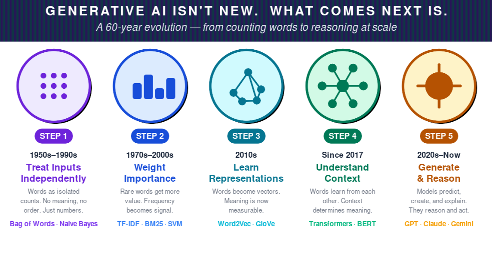
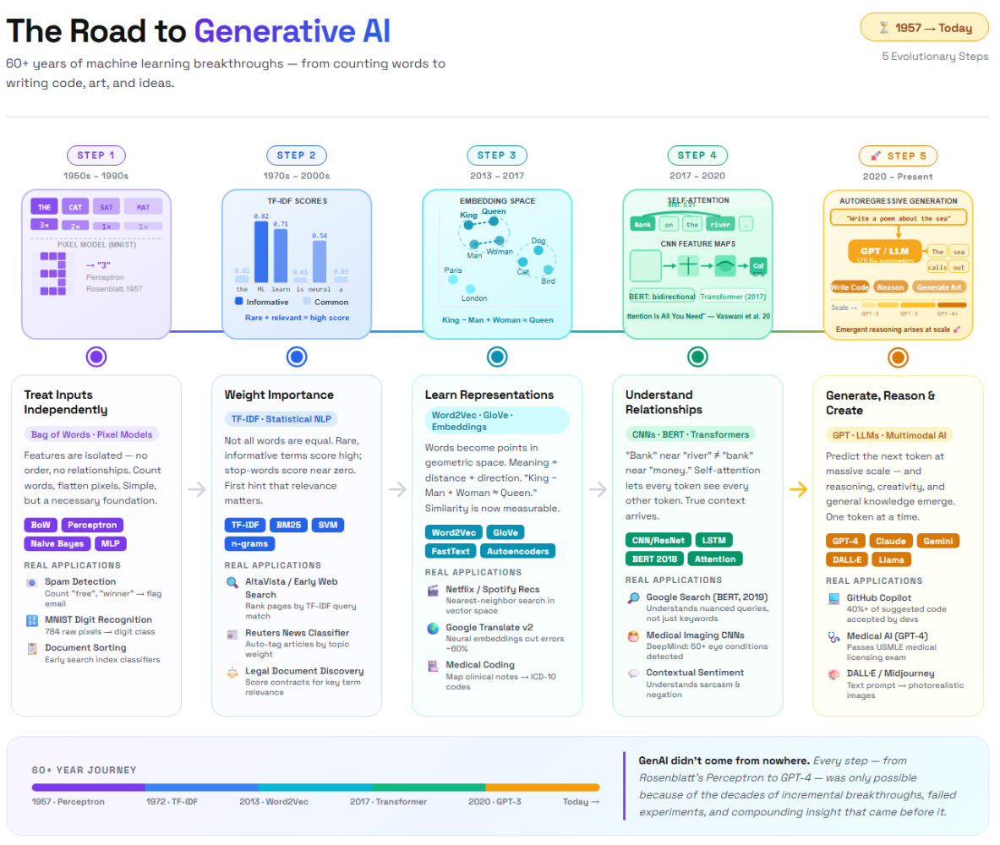

Many people think generative AI is a sudden breakthrough. It is not.
The blunt truth: what we call "AI" today is not a new invention. It is the scaling of ideas that have existed for decades.

At its core, generative AI is a predictive, probabilistic system. What we are seeing today is the result of years of stacked advances in data science and machine learning. What sets this moment apart is not the underlying ideas, but the speed of innovation and the rapid democratization of these capabilities.
From counting words to understanding them
Early models like Bag of Words treated data as independent inputs. Words were just counts. Pixels were just values. Then came weighting with TF-IDF, introducing the idea that not all signals matter equally. Words like "the" were heavily discounted.
Word2Vec, introduced by Google researchers in 2013, turned words into numbers in a way that captured meaning. Words used in similar ways ended up close together in vector space. From there, models like CNNs and the transformer architecture (introduced in the 2017 paper "Attention Is All You Need") helped systems understand structure and context. This led to systems like BERT, which could interpret meaning based on the words around it, not just the words themselves.

From understanding to generation
Then came generative AI.
Generative AI builds directly on this decades-old foundation. Models like GPT, Gemini, and Claude move beyond understanding to generation. Given context, they analyze, predict, and generate new content one piece at a time based on learned probabilities. What feels like intelligence is the result of increasingly powerful pattern recognition, layered over time and trained on a meaningful slice of the public internet.
This is also not the kind of AI we see in science fiction. These systems are not self-aware or broadly thinking on their own, like Skynet in Terminator. They are still predictive systems. But when they are embedded into workflows that can plan, take action, and iterate toward goals, they begin to look much closer to that vision.
What comes next
What comes next is not just better models. It is systems built on top of them. Agents that can plan and take actions. Models that use tools and interfaces. Platforms that learn from real-world feedback. The frontier is no longer the model itself. It is what the model is allowed to do.
For most enterprises, that means the question is no longer "Should we use AI?" It is "Where in our workflows are decisions repetitive enough, and consequences contained enough, to let an AI system actually make them?" The companies that get this right will not be the ones with the biggest models. They will be the ones with the clearest map of which decisions to delegate, which to augment, and which to keep firmly in human hands.